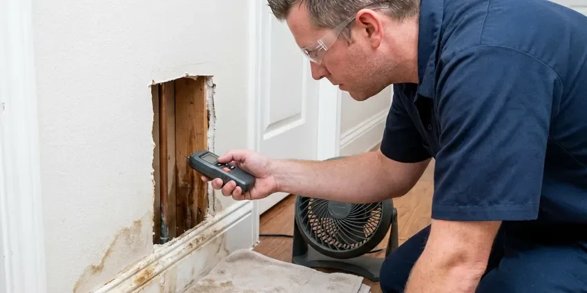

Walls Waterproofing in Pine Bluff, AR
Hidden moisture in a wall usually starts at a pipe, a pan or a sprinkler head. We track it down and seal the wall in Pine Bluff, AR.
- Same-Week Leak Tracing
- Crack Injection Repair
- Licensed and Insured
- Free Written Estimates

Keep Water Out of Your Walls in Pine Bluff, AR.
A dry basement keeps sill plates and joists sound for decades. Schedule a walkthrough with DGR Plumbing.
Basement and Foundation Wall Sealing in Pine Bluff, AR
DGR Plumbing combines plumbing repair and waterproofing, so you pay one crew instead of two. A failed shower pan, a pinhole leak in a copper line inside the wall, or a sprinkler soaking the block foundation can all look like the same damp patch on the drywall. We fix the cause, then seal the wall.
Some of what we do:
- Below-grade wall waterproofing for basements and crawl spaces
- Crawl space vapor barrier installation
- Crack injection with epoxy or polyurethane

Additional Plumbing Maintenance Services in Pine Bluff, AR
Our maintenance and specialty plumbing services in Pine Bluff, AR protect your home year-round and extend the life of every system.


Customers
Why Choose DGR Plumbing for Walls Waterproofing in Pine Bluff, AR?
Footing joints leak. Our crews know how footings, cold joints and window wells let water in, and they work to the local code for drainage and grading on every job. A permit gets pulled when one is required.
- Source First, We repair the plumbing or drainage problem before any waterproofing goes on.
- Rated Membranes, We install manufacturer-approved systems rated for wet areas.
- Lasting Repairs, Injection resins and elastomeric coatings last for decades when the wall is prepped right.
Citywide Coverage
Anywhere in Pine Bluff, AR, you can book the same wall waterproofing service. We handle single-family homes, duplexes and small rental properties, and landlords with several units can bundle inspections into one visit to save on scheduling. A single call sets it up.
Experienced Team
The crew that shows up in Pine Bluff, AR has handled bowed block walls, leaking window wells, failed shower pans and sump pits that ran over in a heavy storm. Few surprises are left. They will tell you plainly what they find.
Safety-First Approach
Shower waterproofing follows plumbing code and the manufacturer's rules for slope, curb height and drain connections. We flood test every pan for 24 hours before any tile goes on, and we photograph the water line at the start and the end of the test. If the water level drops, we rebuild the pan.
Trusted Certified Pine Bluff Plumbing Services Professionals
At DGR Plumbing, we take pride in licensed, certified plumbing services throughout Pine Bluff, AR. Those papers on the wall mean something. Every repair, install and maintenance visit follows strict safety and quality rules, and the plumbers doing the work carry recognized industry credentials.
Call Us Now PHCC Plumbing Contractor Recognition
PHCC Plumbing Contractor Recognition Better Business Bureau (BBB) Accreditation
Better Business Bureau (BBB) Accreditation Angi Certified Pro
Angi Certified Pro ISO 9001 Quality Management Certification
ISO 9001 Quality Management CertificationWall Waterproofing Work We Handle in Pine Bluff, AR
Drainage System Integration in Pine Bluff, AR
Water has to go somewhere once a wall is sealed. Exterior footing drains, interior drain tile and surface French drains all do the same job at different depths. We match the drain to where the water comes from, which might be a high water table, a yard that slopes toward the house, or a gutter dumping at the corner. Downspouts get extended at least four feet out.

Waterproofing Costs vs. Repeat Water Damage in Pine Bluff, AR
Paying once beats paying every two years. Waterproofing a shower wall usually lands in the low thousands, while replacing drywall, cabinets and flooring again and again costs far more, and mold remediation on top of that can double the bill. The price for exterior block sealing depends on how much wall there is. Your quote lists each option with its price.
Shower Wall Waterproofing in Pine Bluff
Tile and grout are not waterproof. Water passes through grout every time you shower, so the layer behind the tile, a membrane over cement board or a foam board system, is what actually keeps the studs dry. We tear out failed tile, install new backer, and apply Schluter Kerdi, RedGard or Hydro Ban at the thickness the manufacturer calls for. Corners, niches and valve holes get extra fabric or preformed pieces.
Basement Wall Sealing in Pine Bluff, AR
Concrete block is porous, and its hollow cores fill with water like a sponge. Humidity speeds corrosion on older metal pipe, so galvanized lines in Arkansas homes often develop leaks and weak water pressure. We drill weep holes at the bottom course to drain the cores, then seal the face with a masonry waterproofer that lets vapor out but stops liquid water. The musty smell usually fades within weeks. The weep holes empty into interior drain tile when there is one.
Crawl Space Encapsulation in Pine Bluff
Encapsulation seals the whole crawl space, walls and floor, with a reinforced poly liner. We run 12 to 20 mil liner up the walls, tape every seam, seal around piers and pipe penetrations, and often add a dehumidifier to keep relative humidity below 60 percent. Humidity speeds corrosion on older metal pipe, so galvanized lines in Arkansas homes often develop leaks and weak water pressure. The joists stop rotting. Drier air under the floor also cuts down on the musty smell in the house.
Plumbing Leak Behind Walls in Pine Bluff
A drip from a shower valve cartridge, a sweated copper stub or a loose drain slip nut can soak a wall cavity for months before paint bubbles. We find it with a moisture meter, a thermal camera that picks up the cooler wet area, and a pressure test on the supply lines. Then we cut a clean access hole. The bad fitting or section of pipe gets replaced. We pull wet insulation and run fans until the cavity reads dry.
Sump Pump Installation and Repair in Pine Bluff, AR
A sump pump is the part of an interior system that actually moves the water. We set a lidded basin below slab level, install a cast iron pump sized to the water coming in, and add a battery backup or water-powered backup for the night the power goes out during a storm. Check valves matter. A missing check valve lets the discharge line drain back into the pit and the pump short-cycles. The discharge line gets routed far enough out that it drains away from the house.

Laundry Room and Utility Wall Waterproofing in Pine Bluff, AR
Rubber washing machine hoses burst. We swap them for braided stainless hoses, put a drain pan under the washer with a line to a floor drain where one is available, and install a quarter-turn shutoff or an automatic leak valve on the supply box. Water heaters get a pan too. The wall behind them can take a moisture-resistant board and sealer.
Wall Waterproofing Near Me in Pine Bluff, AR
Water in a wall does not wait for a convenient week. We keep open slots for active leaks, and when a pipe is still dripping inside the wall we can shut it off, open the drywall and get fans running the same day. Drying usually takes three to five days.
Moisture meters and thermal cameras ride on every truck. That lets us give you an answer on the first visit, including where the water is coming from and which repair fits, instead of scheduling a second trip just to diagnose. You get the quote in writing.
DGR Plumbing at a Glance
- Licensed and insured plumbers serving Pine Bluff, AR
- 24/7 emergency service with same-day scheduling
- Clear written estimates, no hidden fees
- 4.8-star rated by 871+ Arkansas customers
Pine Bluff Map
Pine Bluff Information
- Population
- 39,123
- Area codes
- Local
- Service area
- Pine Bluff and communities within 40 miles
- Nearby
- Little Rock, Benton, North Little Rock, Sherwood
Foundation walls in Pine Bluff, AR take water from two sides, rain soaking the soil outside and hydrostatic pressure pushing through cracks and porous block.
Talk to a Plumber
Reach out to DGR Plumbing for honest, reliable plumbing from people who know the trade in Pine Bluff, AR.
Our Specialized Plumbing Services in Pine Bluff, AR
At DGR Plumbing, you get every kind of plumbing service from one company across Pine Bluff, AR. From leak detection to full system installs, our team works fast and charges fair prices on homes and commercial properties alike. Take a look at our core services below:


How a Wall Waterproofing Job Goes in Pine Bluff, AR
Our process starts with tracing the water and ends with a sealed, tested wall.
Request a Quote
Call (501) 251-9708 to set up an inspection. We walk the foundation and look for cracks, and we ask when the water shows up.
Thorough Inspection
We check every wall for cracks, efflorescence and bowing, and then check the grading and downspouts. That tells us where the water comes from.
Custom Plan
You get a written plan, which may call for crack injection, drain tile, an exterior membrane or some mix of them.
Frequently Asked Questions About Walls Waterproofing in Pine Bluff
Shower wall waterproofing with a membrane system usually runs $1,200 to $3,500 including demolition and backer board, with the new tile priced separately. Block wall sealing outside often costs $800 to $3,000. Below-grade foundation work generally ranges from $2,500 to $8,000.
We do. Our workmanship is warrantied, and a lot of membrane systems also have a manufacturer warranty when they are installed to spec, which is one more reason we never skip a step on cure time or thickness. The coverage is written into your quote.
Small crack patches, sure. A complete system takes knowledge of drainage, foundation behavior and the application steps for each product, and mistakes are expensive because they hide behind finished walls for years. Most DIY failures we see started at the footing joint.
Anywhere from an afternoon to over a week. Interior crack sealing might take a day or two, while exterior excavation with new footing drains might run several days or longer than a week depending on the size of the house. Wet weather can push exterior work back.
Every install gets a written warranty on materials and workmanship. Your proposal lists exactly what is covered and for how long, and when a manufacturer offers its own warranty on a membrane or resin we register it in your name. Store the paperwork with your home documents.
Sprinklers, nine times out of ten. Spray heads and drip lines aimed at the house soak the block every day, and soil sloped toward the wall or a short downspout adds to it, so the masonry stays wet and leaves mineral deposits as it dries. Moving one sprinkler head can fix it.
Xypex, Tremco, Sika and Henry products show up on a lot of our jobs, from crystalline admixtures to elastomeric membranes and sealants. The product depends on the wall. Crystalline coatings work well on poured concrete, but block walls usually call for an elastomeric membrane or drainage board.
Some handy homeowners do. Rolling on a liquid membrane is not hard, but most leaks start at the seams, inside corners and drain, and a pan also needs a correct quarter-inch-per-foot slope plus a 24-hour flood test. A pro install lowers the odds of hidden damage.
Hear From Customers Who Hired Our Plumbing Experts

Mark T.
The floor drain in our office break room backed up every few weeks. The plumber ran a cable, then put a camera down and found roots at a joint about thirty feet out. Seeing it on the screen made the decision easy.
Drain Cleaning · Conway, ARBrian W.
I smelled gas behind the dryer and called right away. The plumber found a corroded flex connector, replaced it, and pressure tested the whole line before turning the gas back on. He let me watch the gauge hold steady for fifteen minutes.
Gas Line Repair · North Little Rock, ARPaul B.
Our pit pump ran nonstop even in dry weather. The plumber found the check valve was stuck open, so the same water kept cycling back into the pit. New valve, new float switch, done in an hour. It runs quiet now.
Sump Pump · Sherwood, AR
Laura S.
Our 40 gallon tank started leaking from the bottom after thirteen years. The tech hauled the old one out, set a new unit with a fresh expansion tank, and had hot water running in about four hours. He took the old tank with him too.
Water Heater Replacement · Sherwood, ARJessica T.
We were adding a gas range in a kitchen remodel and needed a new line run from the meter. The plumber pulled the permit, ran the pipe through the crawl space, and had it inspected and approved within the week.
Gas Line Repair · Sherwood, AR
Robert G.
The camera showed a full break in our clay sewer line near the street. DGR Plumbing replaced it with a trenchless pipe burst, so the only digging was two small pits in the yard. They let us watch the footage before and after.
Sewer Line Replacement · Benton, AR